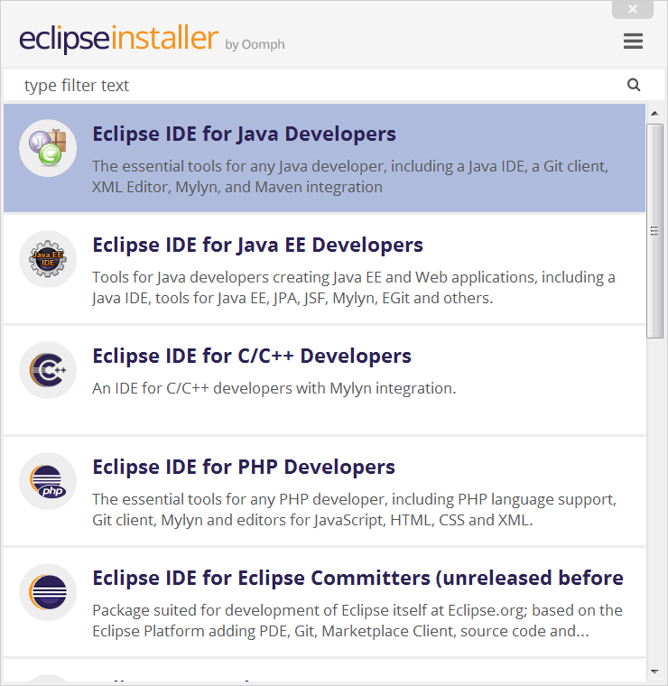
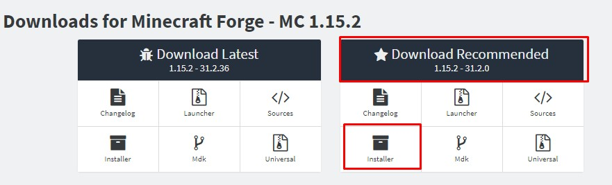
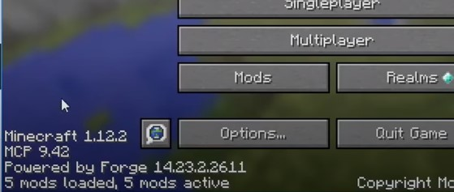

Getting Started
Introduction
Welcome to Introduction to Java with Minecraft Modding. This website will guide you through the process of creating your own mod, and serve as a place where you can review what was talked about during instructional time at camp. In this section, you'll be guided through the process of installing the Java Development Kit (JDK), the Integrated Development Environment (IDE) Eclipse, as well as the Minecraft modding Application Programming Interface (API) Minecraft Forge. While there are other options in terms of software, these are what you will see in this tutorial. All of these will be necessary to creating our mod. As we explore further, there will be other software that will be recommended to accomplish other tasks, but for now this is all you will need. Let's get started!
Installing the JDK
If you have Minecraft installed, then it's likely you've gone through the process of installing Java. Java has three components: the Java Virtual Machine (JVM), the Java Runtime Environment (JRE), and the JDK. The JRE and JDK work together to help your computer run programs that are coded in Java. They are required to run programs like Minecraft. The JDK is what gives devlopers, people who code in Java, the tools they need to write programs.
The JDK can be downloaded from Oracle's website here. Scroll down until you find Windows Installer on Windows or macOS Installer on Mac. Proceed with the download process and follow the instructions given to you by the installation wizard. It might take a couple minutes to finish depending on your connection.
Installing Eclipse
Now that we have installed the JDK, we can move on to installing Eclipse. IDEs are where code is written. Though you can use a standard text editor to write code, IDEs have special tools that make writing code easier. They can point out your mistakes, auto-fill information, run your program, and more. One of the most common and most powerful IDEs for Java is called Eclipse and it is what we will be using to make the majority of our mods.
The first step is to go to the Eclipse website and download the latest version of the Eclipse installer. When prompted to select a package, choose Eclipse IDE for Java Developers as shown below.
Intalling Minecraft Forge
As Minecraft does not have native support for modding, we can use a modding API to help us change Minecraft's original code. We'll be using Minecraft Forge. You might have heard of it if you have ever downloaded or played a modpack before. Using the tools that Forge provides, we'll be able to modify the game in lots of different ways. It's important that before you start this tutorial, you have the latest version of Minecraft downloaded. If your version of Minecraft does not match mine, it should be fine as long as you are using the latest version.
The first step is to download forge here. I recommend downloading the installer as shown below, it will make everything a lot easier.
After clicking installer, you will be directed to a download page and will have to wait 5 seconds before downloading. DO NOT PRESS anything but the skip button shown in the image below. Otherwise, you could end up downloading some malware.
Follow the instructions given by the launcher. When prompted, make sure to select Install client. You don't need to Install server for this tutorial. You are close to being finished! After finishing with the install process, you should be able to open the Minecraft launcher and play the version that contains "forge" as part of the name. It might take slightly longer to load than you are used to, however when you are done, your game client should appear simiar to what is shown below.
Conclusion
Now that you have all of these tools installed, we're ready to start making Minecraft Mods! First, however, I recommend checking out the basic Java tutorial page.